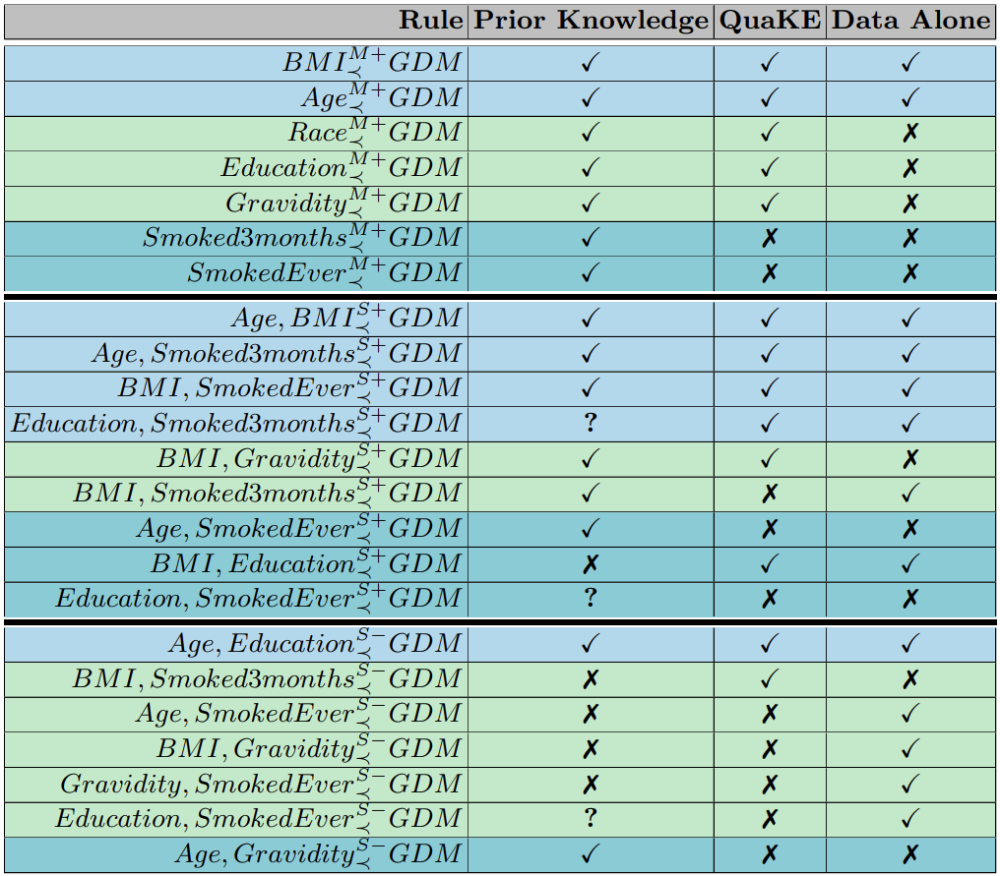

QuaKE: Extracting Qualitative Knowledge for Early Prediction of Gestational Diabetes
Athresh Karanam, Alexander L. Hayes, Harsha Kokel, David M. Haas, Predrag Radivojac, Sriraam Natarajan · AIME 2021
Accepted at the 19th International Conference on Artificial Intelligence in Medicine (AIME 2021), and published in Springer Lecture Notes in Artificial Intelligence. In this work: (1) we developed an algorithm to extract qualitative rules from a causal/probabilistic model; (2) we applied it to a dataset for predicting gestational diabetes from clinical observations; (3) we verified the rules against the prior knowledge of a clinical expert in gynecology (Dr. Haas) — finding a precision of 0.923 and suggesting some mismatched cases could be future research directions.
Qualitative Knowledge in Machine Learning
This work combines two project categories our group investigates: Human-Allied Artificial Intelligence and Precision Health. Consider the following statements:
- Risk of lung cancer increases with the number of cigarettes smoked
- Risk of high blood glucose decreases with each additional hour of sleep, up to eight
- Risk of gestational diabetes (GDM) increases with BMI
Each statement describes how a change in one variable influences the change in another — a common result of medical studies, and highly influential in medical decision making. These are statements about monotonic influence (MI) between variables, denoted $X_{\prec}^{M+}Y$. Prior work asked domain experts to provide these statements up front, and empirical results show that this inductive bias makes it possible to learn good models even with little data.
Now consider: "Increase in BMI increases the risk of high blood pressure in patients with family history of hypertension more than in patients without such family history." This is a statement about synergistic influence (SI) between sets of variables, ${A,B}_{\prec}^{S+}Y$. Both types of knowledge have been successfully applied as inductive bias prior to learning. Here we're interested in the reverse problem: given a causal/probabilistic world model, can we reverse-engineer the same kind of qualitative knowledge that experts have? This could be an important component for getting machines to reason and explain themselves in ways that are amenable to how humans understand the world.
Standard Rule Mining Doesn't Handle This Case
Decision rules are close in spirit. Assuming ordinal, categorical, or binned data, a rule such as "if Systolic Blood Pressure Category = 0 and Diastolic Blood Pressure Category = 0, then Blood Pressure Category = 0" translates naturally to: "if a person's systolic blood pressure is less than 120 and diastolic blood pressure is less than 80, they have normal blood pressure."
But how should one write "risk of gestational diabetes increases with BMI" as a conjunctive rule? It's not obvious — it would require enumerating all possible values of BMI and GDM, weighting rules by outcome probability, and asserting that a monotonic increase in one implies a monotonic increase in the other. The qualitative influence statement $\text{BMI}_{\prec}^{M+}\text{GDM}$ is far more general, concerning all possible values of both variables — a single rule that concisely expresses what would take multiple decision rules.
Learning Qualitative Influence Statements: The QuaKE Algorithm
We develop metrics to measure the degree of monotonicity and synergy, denoted $\delta_a$ (degree of monotonic influence) and $\delta_{a,b}$ (degree of synergistic influence). Both have slack $\epsilon$ hyperparameters allowing some violation of the constraints, and threshold $T$ hyperparameters tuning the degree considered a true QI statement.
Initialize: $\boldsymbol{R} \leftarrow \emptyset$
for $a \leftarrow 0$ to $(|\boldsymbol{X}| - 1)$ do
compute $\delta_a$ (degree of monotonic influence)
if $\delta_a \geq T_m$ then $\boldsymbol{R} \leftarrow (X_{a\prec}^{M+}Y) \cup \boldsymbol{R}$
for $b \leftarrow a+1$ to $(|\boldsymbol{X}| - 1)$ do
compute $\delta_{a,b}$ (degree of synergistic influence)
if $\delta_{a,b} \geq T_s$ then $\boldsymbol{R} \leftarrow (\{X_a,X_b\}_{\prec}^{S+}Y) \cup \boldsymbol{R}$
return $\boldsymbol{R}$
Briefly: the degree of monotonic influence measures the difference in probability of $Y$ for a variable $X_a$ across combinations of its values; the synergistic calculation is similar but accounts for the context-specific influence of one variable in the presence of another. Full derivations are in Section 2 of the paper.
Application to Gestational Diabetes
We applied this to a domain where the goal was to predict gestational diabetes from clinical observations.

We extracted rules using our algorithm, and asked David M. Haas to do a similar labeling over the rules. QuaKE scored a precision of 0.923 (over five cross-validation folds) compared to Dr. Haas — good agreement with clinical knowledge in most cases, with the disagreements suggesting interesting directions for future study.
Presentation
Citation
Athresh Karanam, Alexander L. Hayes, Harsha Kokel, David M. Haas, Predrag Radivojac, and Sriraam Natarajan. (2021) A Probabilistic Approach to Extract Qualitative Knowledge for Early Prediction of Gestational Diabetes. In: Artificial Intelligence in Medicine. AIME 2021.
@inproceedings{karanam2021quake,
author = {Athresh Karanam and Alexander L. Hayes and Harsha Kokel and David M. Haas and Predrag Radivojac and Sriraam Natarajan},
title = {A Probabilistic Approach to Extract Qualitative Knowledge for Early Prediction of Gestational Diabetes},
year = {2021},
booktitle = {Artificial Intelligence in Medicine}
}
Acknowledgements
We gratefully acknowledge the support of 1R01HD101246 from NICHD and the Precision Health Initiative of Indiana University. Thanks to Rashika Ramola and Rafael Guerrero for advice during the data processing phase and their helpful discussions and feedback.
Footnotes
- Altendorf et al. presented results of monotonic constraints that included the UCI Breast Cancer Wisconsin data set as an extreme case of this, scoring 90% accuracy with a single example and qualitative background knowledge in the form of monotonicities — showing that an informed learner with a single example could be equivalent to an uninformed learner given hundreds of examples. See learning curves in Figure 8 of "Learning from Sparse Data by Exploiting Monotonicity Constraints."
- From Yang and Natarajan (2013) "Knowledge Intensive Learning: Combining Qualitative Constraints with Causal Independence for Parameter Learning in Probabilistic Models."
- The discussion here is overly concise and ignores differences in model learning. Decision rules and decision trees often strike a good balance between effectiveness and interpretability. For a longer discussion, Christoph Molnar's summary is a good place to look: Interpretable Machine Learning > Interpretable Models > Decision Rules.
- We speculated this could still be a viable option. Gopalakrishnan [2010] studied a related problem and proposed a "Bayesian Rule Extraction" algorithm, learning the structure and parameters of a Bayesian Network then extracting rules by comparing confidence factors between binary outcomes conditioned on the same evidence. It may be possible to extract qualitative rules by running this algorithm on learned BNs and checking whether confidence factors increase (decrease) as the factors increase (decrease). See "Bayesian rule learning for biomedical data mining." Alexander L. Hayes implemented a version of this — an overview and example is in the README of this GitHub repository.